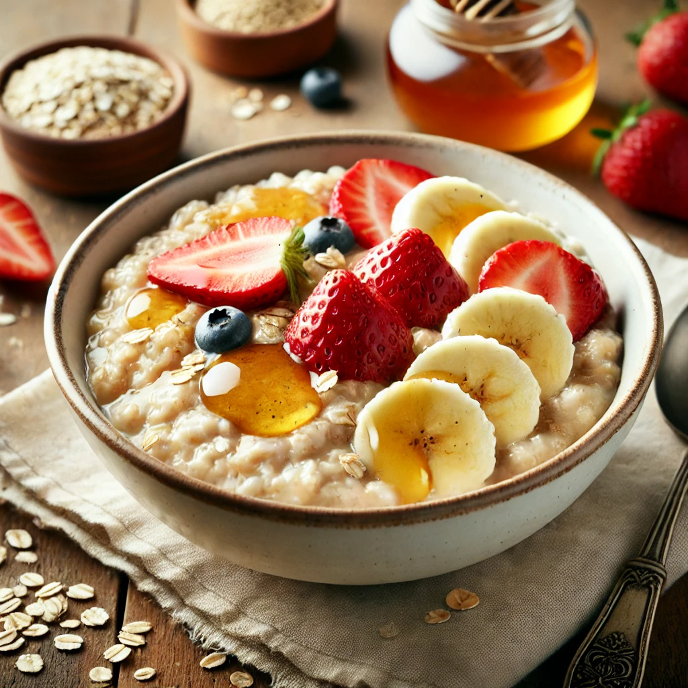
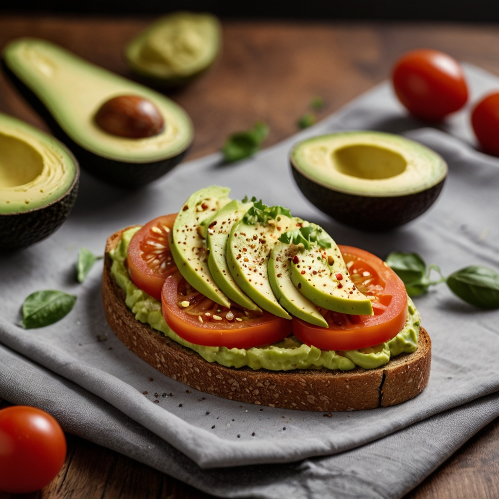
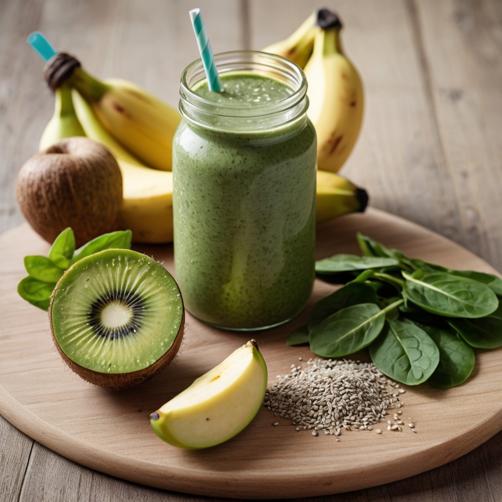
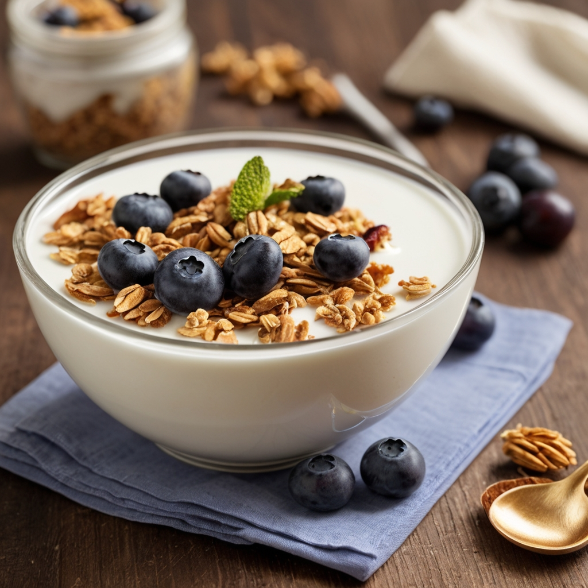
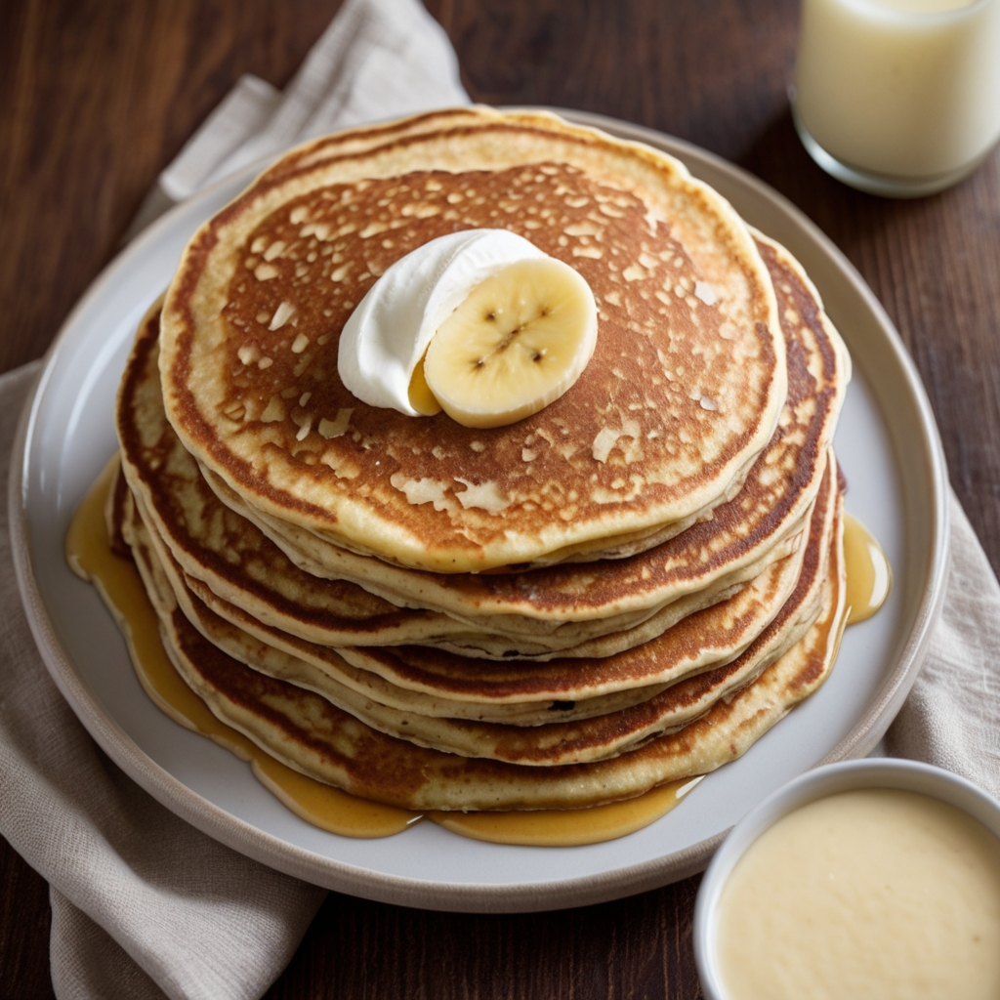
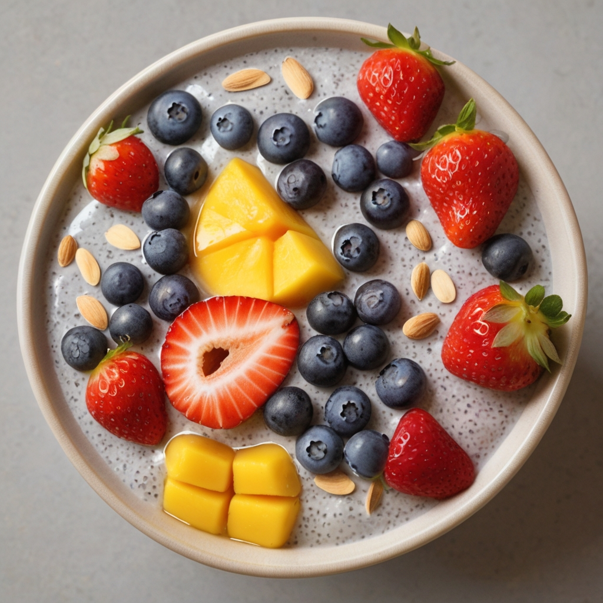

Desayunos
Avena con Frutas y Miel
🕒10 minutos 👤 2 raciones
Ingredientes
- 1 taza de avena
- 2 tazas de leche (puede ser vegetal)
- 1 plátano en rodajas
- 1/2 taza de fresas en trozos
- 1 cucharada de miel
Pasos de preparación
- Cocina la avena en la leche a fuego medio hasta que espese (unos 5-7 minutos).
- Sirve en un tazón y añade las rodajas de plátano, fresas y nueces.
- Rocía con miel al gusto.
Macronutrientes por ración:
- Calorías: 350 kcal
- Proteínas: 9g
- Carbohidratos: 55g
- Grasas: 11g

Tostadas de Aguacate
🕒5 minutos 👤1 ración
Ingredientes
- 2 rebanadas de pan integral
- 1 aguacate
- 1 tomate en rodajas
- Sal y pimienta al gusto
- Jugo de medio limón
Pasos de preparación
- Tuesta las rebanadas de pan.
- Aplasta el aguacate y mézclalo con el jugo de limón, sal y pimienta.
- Unta el aguacate sobre el pan tostado y coloca las rodajas de tomate encima.
Macronutrientes por ración
- Calorías: 320 kcal
- Proteínas: 8g
- Carbohidratos: 42g
- Grasas: 17g

Smoothie Verde
🕒5 minutos 👤1 ración
Ingredientes
- 1 taza de espinacas frescas
- 1 plátano
- 1 manzana verde
- 1 taza de agua de coco
- 1 cucharada de semillas de chía
Pasos de preparación
- Mezcla todos los ingredientes en una licuadora hasta obtener una mezcla homogénea.
- Sirve inmediatamente.
Macronutrientes por ración
- Calorías: 210 kcal
- Proteínas: 4g
- Carbohidratos: 45g
- Grasas: 3g

Yogur con Granola y Frutas
🕒5 minutos 👤1 ración
Ingredientes
- 1 taza de yogur natural
- 1/2 taza de granola
- 1/2 taza de arándanos
- 1 cucharada de miel
Pasos de preparación
- En un tazón, coloca el yogur.
- Añade la granola y los arándanos por encima.
- Rocía con miel al gusto.
Macronutrientes por ración
- Calorías: 350 kcal
- Proteínas: 14g
- Carbohidratos: 55g
- Grasas: 10g

Huevos Revueltos con Espinacas y Champiñones
🕒10 minutos 👤1 ración
Ingredientes
- 3 huevos
- 1 taza de espinacas frescas
- 1/2 taza de champiñones en rodajas
- 1 cucharada de aceite de oliva
- Sal y pimienta al gusto
Pasos de preparación
- Calienta el aceite en una sartén a fuego medio.
- Añade los champiñones y cocínalos hasta que estén tiernos.
- Agrega las espinacas y cocina hasta que se ablanden.
- Bate los huevos en un tazón y viértelos en la sartén.
- Cocina revolviendo hasta que los huevos estén cocidos.
Macronutrientes por ración
- Calorías: 250 kcal
- Proteínas: 18g
- Carbohidratos: 5g
- Grasas: 18g

Panqueques de Avena y Plátano
🕒15 minutos 👤2 raciones
Ingredientes
- 1 taza de avena
- 1 plátano maduro
- 1 huevo
- 1/2 taza de leche (puede ser vegetal)
- 1 cucharadita de polvo de hornear
Pasos de preparación
- Mezcla todos los ingredientes en una licuadora hasta obtener una masa homogénea.
- Calienta una sartén antiadherente a fuego medio.
- Vierte pequeñas cantidades de la masa en la sartén y cocina cada panqueque hasta que aparezcan burbujas en la superficie, luego voltea y cocina por el otro lado.
Macronutrientes por ración
- Calorías: 220 kcal
- Proteínas: 8g
- Carbohidratos: 38g
- Grasas: 5g

Chía Pudding con Frutas
🕒 5 minutos (más 2 horas de refrigeración) 👤2 ración
Ingredientes
- 1/4 taza de semillas de chía
- 1 taza de leche de almendras
- 1 cucharadita de extracto de vainilla
- 1 cucharada de miel
- Frutas frescas al gusto (fresas, arándanos, mango)
Pasos de preparación
- Mezcla las semillas de chía, la leche de almendras, la vainilla y la miel en un tazón.
- Refrigera durante al menos 2 horas o toda la noche.
- Antes de servir, añade las frutas frescas por encima.
Macronutrientes por ración
- Calorías: 200 kcal
- Proteínas: 5g
- Carbohidratos: 25g
- Grasas: 9g

Wrap de Hummus y Vegetales
🕒5 minutos 👤1 ración
Ingredientes
- 1 tortilla integral
- 3 cucharadas de hummus
- 1/2 taza de zanahoria rallada
- 1/2 pepino en rodajas
- 1/2 pimiento rojo en tiras
- Hojas de espinaca
Pasos de preparación
- Unta el hummus sobre la tortilla.
- Coloca las zanahorias, pepino, pimiento y espinacas sobre el hummus.
- Enrolla la tortilla y córtala a la mitad si lo deseas.
Macronutrientes por ración
- Calorías: 250 kcal
- Proteínas: 8g
- Carbohidratos: 40g
- Grasas: 8g
Muffins de Huevos y Verduras
🕒25 minutos 👤6 muffins
Ingredientes
- 6 huevos
- 1/2 taza de espinacas picadas
- 1/2 taza de pimientos picados
- 1/4 taza de cebolla picada
- Sal y pimienta al gusto
Pasos de preparación
- Precalienta el horno a 180°C (350°F).
- Bate los huevos en un tazón y añade las verduras, sal y pimienta.
- Vierte la mezcla en moldes para muffins engrasados.
- Hornea por 15-20 minutos o hasta que los muffins estén cocidos.
Macronutrientes por muffin
- Calorías: 70 kcal
- Proteínas: 6g
- Carbohidratos: 1g
- Grasas: 5g
Batido de Proteína con Frutas
🕒5 minutos 👤1 ración
Ingredientes
- 1 scoop de proteína en polvo (preferiblemente vegetal)
- 1 taza de leche de almendras
- 1 plátano
- 1/2 taza de frutos rojos congelados
- 1 cucharada de mantequilla de almendra
Pasos de preparación
- Mezcla todos los ingredientes en una licuadora hasta obtener una mezcla homogénea.
- Sirve inmediatamente.
Macronutrientes por ración
- Calorías: 300 kcal
- Proteínas: 20g
- Carbohidratos: 40g
- Grasas: 8g
Huevos al Horno en Aguacate
🕒 20 minutos 👤 2 raciones
Ingredientes
- 2 aguacates grandes y maduros
- 4 huevos
- Sal y pimienta al gusto
- Hierbas frescas picadas (opcional)
Pasos de preparación
- Pre-calienta el horno a 200°C (400°F).
- Corta los aguacates por la mitad y retira un poco de pulpa para hacer espacio para los huevos.
- Coloca los aguacates en una bandeja para hornear y casca un huevo en cada mitad.
- Sazona con sal, pimienta y hierbas al gusto.
- Hornea durante unos 15 minutos, o hasta que las claras estén firmes y las yemas estén cocidas al gusto.
Macronutrientes por ración
- Calorías: 300 kcal
- Proteínas: 12g
- Carbohidratos: 14g
- Grasas: 24g
Muffins de Huevo con Vegetales
🕒 25 minutos 👤 4 raciones
Ingredientes
- 8 huevos
- 1 taza de espinacas picadas
- 1/2 taza de tomate picado
- 1/4 taza de cebolla picada
- Sal y pimienta al gusto
Pasos de preparación
- Pre-calienta el horno a 180°C (350°F) y engrasa un molde para muffins.
- En un tazón grande, bate los huevos y sazona con sal y pimienta al gusto.
- Agrega las espinacas, tomates y cebollas picadas a los huevos batidos y mezcla bien.
- Vierte la mezcla en los moldes para muffins, llenándolos aproximadamente 3/4 de su capacidad.
- Hornea durante unos 20 minutos o hasta que estén dorados y firmes al tacto.
Macronutrientes por ración
- Calorías: 120 kcal
- Proteínas: 10g
- Carbohidratos: 3g
- Grasas: 8g
Smoothie Bowl de Frutas
🕒 10 minutos 👤 1 ración
Ingredientes
- 1 plátano congelado
- 1 taza de fresas congeladas
- 1/2 taza de yogur griego
- 1/4 taza de leche de almendras
- 2 cucharadas de granola
Pasos de preparación
- Coloca el plátano, las fresas, el yogur griego y la leche de almendras en una licuadora.
- Mezcla hasta obtener una consistencia suave y cremosa.
- Vierte la mezcla en un tazón y decora con granola y otras frutas si lo deseas.
Macronutrientes por ración
- Calorías: 300 kcal
- Proteínas: 15g
- Carbohidratos: 45g
- Grasas: 8g
Avena con Manzana y Canela
🕒 10 minutos 👤 1 ración
Ingredientes
- 1/2 taza de avena
- 1 taza de leche (puede ser vegetal)
- 1 manzana, cortada en trozos
- 1 cucharadita de canela en polvo
- 1 cucharadita de miel (opcional)
Pasos de preparación
- En una olla, lleva la leche a ebullición.
- Agrega la avena y cocina a fuego medio durante 5-7 minutos, revolviendo ocasionalmente.
- Retira del fuego y mezcla con la manzana, la canela y la miel.
- Sirve caliente.
Macronutrientes por ración
- Calorías: 300 kcal
- Proteínas: 8g
- Carbohidratos: 55g
- Grasas: 6g
Yogur con Frutas y Frutos Secos
🕒 5 minutos 👤 1 ración
Ingredientes
- 1 taza de yogur natural
- 1/2 taza de fresas, cortadas en trozos
- 1/4 taza de arándanos
- 1/4 taza de nueces
- 1 cucharadita de miel (opcional)
Pasos de preparación
- Coloca el yogur en un tazón.
- Agrega las fresas, los arándanos y las nueces.
- Si lo deseas, rocía con miel.
- Sirve y disfruta.
Macronutrientes por ración
- Calorías: 250 kcal
- Proteínas: 10g
- Carbohidratos: 30g
- Grasas: 12g
Tortilla de Espinacas y Champiñones
🕒 15 minutos 👤 2 raciones
Ingredientes
- 4 huevos
- 1 taza de espinacas frescas, picadas
- 1/2 taza de champiñones, en rodajas
- 1/4 taza de queso rallado (opcional)
- Sal y pimienta al gusto
Pasos de preparación
- En un tazón, bate los huevos y sazona con sal y pimienta.
- En una sartén antiadherente, saltea las espinacas y los champiñones hasta que estén tiernos.
- Vierte los huevos batidos sobre las espinacas y los champiñones.
- Cocina a fuego medio-bajo hasta que los huevos estén cocidos.
- Si lo deseas, espolvorea queso rallado sobre la tortilla antes de servir.
Macronutrientes por ración
- Calorías: 220 kcal
- Proteínas: 15g
- Carbohidratos: 5g
- Grasas: 16g
Huevos Benedictinos con Espárragos
🕒 25 minutos 👤 2 raciones
Ingredientes
- 4 huevos
- 2 panecillos ingleses
- 4 lonchas de jamón cocido
- 8 espárragos
- Vinagre blanco
- Sal y pimienta al gusto
Pasos de preparación
- Cocina los espárragos en agua hirviendo con un poco de sal hasta que estén tiernos.
- En una sartén, dora ligeramente los panecillos ingleses.
- Pochea los huevos en agua con un chorrito de vinagre.
- Coloca una loncha de jamón sobre cada panecillo, seguido de los espárragos y los huevos pochados.
- Sazona con sal y pimienta al gusto y sirve caliente.
Macronutrientes por ración
- Calorías: 280 kcal
- Proteínas: 18g
- Carbohidratos: 20g
- Grasas: 14g
Panqueques de Plátano y Avena
🕒 15 minutos 👤 2 raciones
Ingredientes
- 1 plátano maduro
- 1 huevo
- 1/2 taza de avena
- 1/2 cucharadita de polvo de hornear
- 1/2 cucharadita de canela en polvo
- 1/4 taza de leche (puede ser vegetal)
Pasos de preparación
- En un tazón, machaca el plátano hasta obtener un puré.
- Añade el huevo, la avena, el polvo de hornear, la canela y la leche, y mezcla hasta obtener una masa homogénea.
- Calienta una sartén antiadherente y vierte un poco de masa para formar cada panqueque.
- Cocina por unos minutos por cada lado hasta que estén dorados.
- Sirve caliente con tus toppings favoritos.
Macronutrientes por ración
- Calorías: 230 kcal
- Proteínas: 8g
- Carbohidratos: 35g
- Grasas: 6g
Tazón de Yogur con Granola y Bayas
🕒 5 minutos 👤 1 ración
Ingredientes
- 1 taza de yogur natural
- 1/4 taza de granola
- 1/4 taza de fresas
- 1/4 taza de arándanos
- 1 cucharadita de miel (opcional)
Pasos de preparación
- Coloca el yogur en un tazón.
- Agrega la granola, las fresas y los arándanos por encima.
- Si lo deseas, añade un poco de miel para endulzar.
- Sirve y disfruta.
Macronutrientes por ración
- Calorías: 280 kcal
- Proteínas: 10g
- Carbohidratos: 40g
- Grasas: 8g
Tostadas de Aguacate y Tomate
🕒 10 minutos 👤 1 ración
Ingredientes
- 2 rebanadas de pan integral
- 1 aguacate maduro
- 1 tomate mediano, en rodajas
- Sal y pimienta al gusto
- Chile en polvo (opcional)
Pasos de preparación
- Tuesta el pan integral.
- Unta el aguacate en las rebanadas de pan tostado.
- Coloca las rodajas de tomate sobre el aguacate.
- Sazona con sal, pimienta y chile en polvo al gusto.
- Sirve y disfruta.
Macronutrientes por ración
- Calorías: 280 kcal
- Proteínas: 6g
- Carbohidratos: 30g
- Grasas: 16g
Batido de Bayas y Espinacas
🕒 5 minutos 👤 1 ración
Ingredientes
- 1 plátano maduro
- 1 taza de bayas mixtas (fresas, arándanos, frambuesas)
- 1 taza de espinacas frescas
- 1/2 taza de leche de almendras (o cualquier otra leche)
- 1 cucharada de semillas de chía (opcional)
Pasos de preparación
- Coloca todos los ingredientes en una licuadora.
- Mezcla hasta obtener una consistencia suave.
- Vierte en un vaso y sirve.
Macronutrientes por ración
- Calorías: 250 kcal
- Proteínas: 5g
- Carbohidratos: 45g
- Grasas: 7g
Tazón de Açaí con Granola y Frutas
🕒 5 minutos 👤 1 ración
Ingredientes
- 1 paquete de puré de açaí congelado
- 1/2 plátano, en rodajas
- 1/4 taza de granola
- 1/4 taza de bayas mixtas (fresas, arándanos, frambuesas)
- 1 cucharada de miel (opcional)
Pasos de preparación
- Coloca el puré de açaí congelado en un tazón.
- Decora con las rodajas de plátano, la granola y las bayas.
- Si lo deseas, añade un poco de miel por encima.
- Sirve y disfruta.
Macronutrientes por ración
- Calorías: 300 kcal
- Proteínas: 5g
- Carbohidratos: 45g
- Grasas: 12g